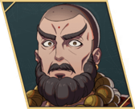

Yang Jie
- Chinese name
- 杨界
- Game8 tier
- B
- Used in
- Path 2: Dietrich
- Personal abilities
- Monkly Havoc, Robust Health
- Boons
- Axe, White Magic
- Banes
- Riding, Sword
- Likes
- Alcohol, tales of old, distant journeys, saving the weak
Growth rates
| HP | Str | Mag | Spd | Dex | Def | Res | Lck | Cha |
|---|---|---|---|---|---|---|---|---|
| 50 | 35 | 40 | 35 | 35 | 30 | 40 | 40 | 25 |
Gifts they like
- Loved
- Eastern Tea Leaves, Poems of the Greats, Strategy Manuscript, Tales of Adventure, Volcano Ghosh
- Really liked
- Aromatic Shosh, Coffee Pastries, Common Coffee, Flexible Fishing Rod, Herbal Recipe Guide, Home-Recipe Book, Huge Fish Eyeball, Jade Ghosh, Kitten Figurine, Light Shosh, Mature Ghosh, Mature Shosh, Orgus Coffee, Pastry Cookbook, Rustic Ghosh, Secret Ghosh, Select Coffee, Sharp Fishhook, Southern Coffee, Southern Ghosh, Sun Ghosh, The Works of Dante, Trader's Handbook, Village Recipes, Young Ghosh
Paired ending
Their only listed ending partner is Eshmel, who is paired elsewhere in this plan. See the Supports page to swap.
Builds
Path 2: Dietrich (Normal)
- Diviner Beginner start
ranks: White D / Black D - Priest Specialty Lv20
ranks: White C - Bishop Advanced Lv35
ranks: White B
- Joins
- Tutorial · S1/R2 · quiz: Cheese, Full-moon night, Potatoes
- Role
- Main healer
- Train
- White Magic to B.
- Gear
- Physic staff — the route lacks a long-range healer (Game8 JP).
- Level in
- Diviner: Mag 55% · Res 50% · Spd 35%
Priest: Mag 50% · Res 55% · Spd 40%
Bishop: Mag 55% · Res 60% · Spd 35% - Master here
- Priest → Piety (Lck +3); Bishop → Barrier (Adjacent allies Res +3)
- Farm only
- Shaman → Bind Dexterity (Adjacent foes Dex −3)
- Equip order
- Monkly Havoc → Robust Health → Barrier → Piety → Bind Dexterity → White Magic Lv. 3 at B+ (Hit/Avo +5)
- Why
- Game8's line. Part III: Wiseman if fielded.